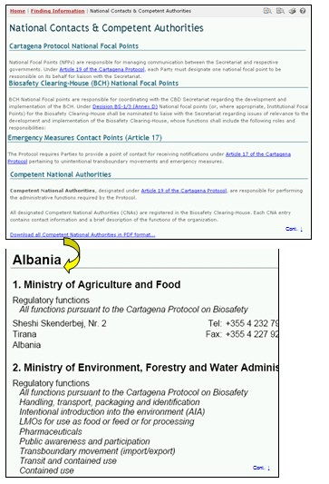

URL: http://bch.cbd.int/database/contacts/focalpoints.shtml
El acceso a la lista compilada de contactos nacionales se puede obtener en el vínculo de Contactos Nacionales del menú ubicado al lado izquierdo en la página Búsqueda de Información o en el menú que se despliega de Búsqueda de Información en la barra de navegación del Portal Central del CIISB.
Estos vínculos llevan a los usuarios a la página Contactos Nacionales & Autoridades Competentes que proporciona enlaces a la lista compilada de:
- Punto Focal Nacional del Protocolo de Cartagena;
- Punto Focal Nacional del Centro de Intercambio de Información sobre Bioseguridad (CIISB);
- Punto Focal Nacional de Medida de Emergencia (Artículo 17); y
- Autoridades Nacionales Competentes.

Figura 125